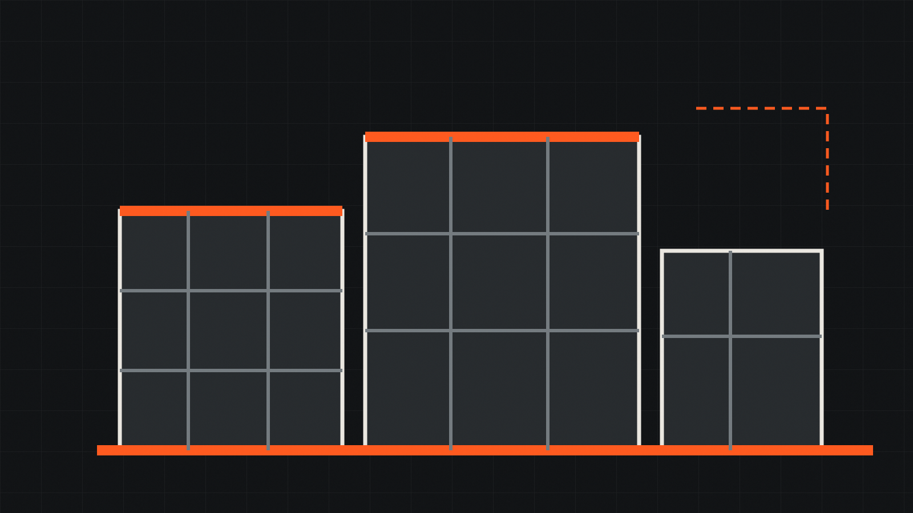
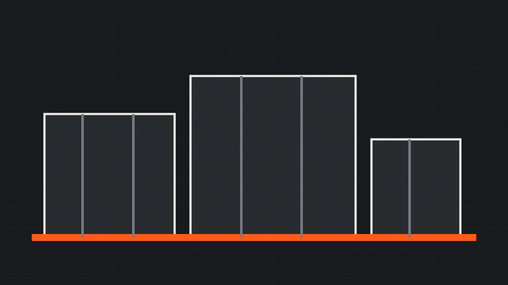
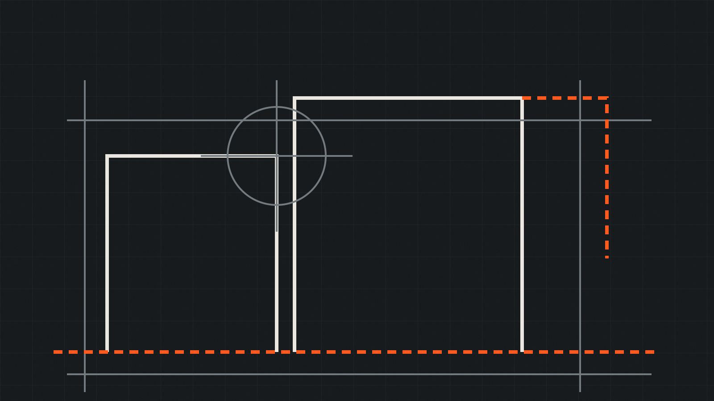
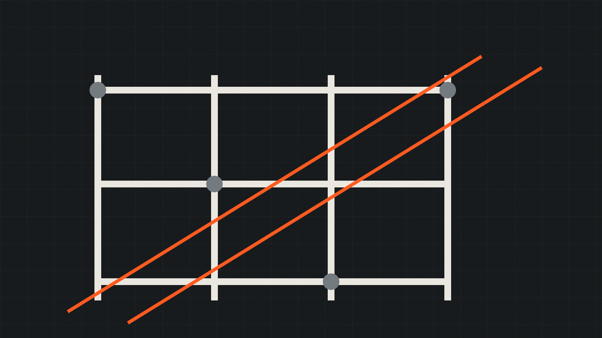

CONSTRUCTION DELIVERY / PRAGUE
Stavíme.
Koordinujeme.
Přebíráme odpovědnost.
Stavební realizace, projektová příprava, správa nemovitostí a zámečnická kapacita v jednom zavedeném firemním zázemí.
VERIFIED COMPANY DATA
Zavedená firma.
Jasně doložený základ.
CZ64580831
Holešovice
Firemní údaje vycházejí z veřejných rejstříků. Neuvádíme neověřené klienty, obrat, ocenění ani realizace.
REGISTERED CAPABILITIES
Čtyři kapacity.
Jeden odpovědný partner.
Obsah vychází z veřejně registrovaných činností. Obrazové materiály jsou záměrně označené jako ilustrační.
DELIVERY CONTROL
Zakázka není sled činností.
Je to řízený systém.
Pro investora je rozhodující předvídatelnost: kdo rozhoduje, co se kontroluje, jak se řídí změny a co přesně se předává.
FUTURE CASE STUDIES
Portfolio připravené
na skutečné firemní podklady.
Demo ukazuje zamýšlený formát referencí, aniž by tvrdilo, že BAUREKO realizovalo zobrazené stavby.

Ilustrační fotografie — nejde o doloženou realizaci BAUREKO.FORMÁT / 01
Bytová výstavba
Klient · lokalita · rozsah · harmonogram · role BAUREKO

Ilustrační fotografie — nejde o doloženou realizaci BAUREKO.FORMÁT / 02
Rekonstrukce
Výchozí stav · technické řešení · provozní omezení · výsledek

Ilustrační fotografie — nejde o doloženou realizaci BAUREKO.FORMÁT / 03
Kovové prvky
Návrh · výroba · povrch · montáž · návaznost na stavbu
PROCUREMENT READY
Podklady pro investory, správce a generální dodavatele.
Strukturovaná poptávka pomůže rychle rozlišit typ zakázky, fázi přípravy, termín, místo a odpovědnosti.
CHECKLIST / 06
- Identifikace investora a projektu
- Rozsah stavební nebo technické části
- Projektová dokumentace a výkaz výměr
- Požadovaný termín a etapizace
- Provozní a bezpečnostní omezení
- Kontaktní a rozhodovací struktura
CAREERS / PARTNERS
Pro lidi, kteří chtějí
vidět výsledek v prostoru.
Demonstrační náborový modul pro technické, realizační a řemeslné role. Aktuální pozice musí společnost před spuštěním potvrdit.
Stavbyvedoucí a technická příprava
Koordinace podkladů, profesí, dodavatelů, termínů a kvality.
Zámečníci a montážní pracovníci
Zakázková výroba, montáž a návaznost kovových prvků na stavbu.
Subdodavatelé a odborné profese
Spolupráce na konkrétních kapacitách podle rozsahu a lokality zakázky.
CONTACT / PRAGUE 7
Máte připravené zadání?
Začněme kvalifikací projektu.
Šimáčkova 1450/9
170 00 Praha 7 — Holešovice
IČO 64580831
DIČ CZ64580831
C 40842, Městský soud v Praze